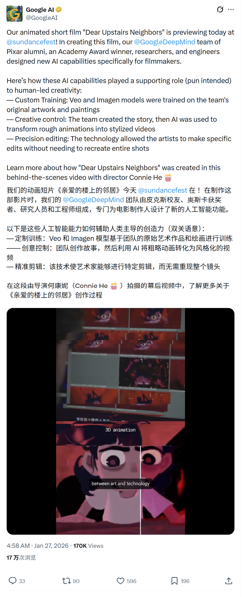
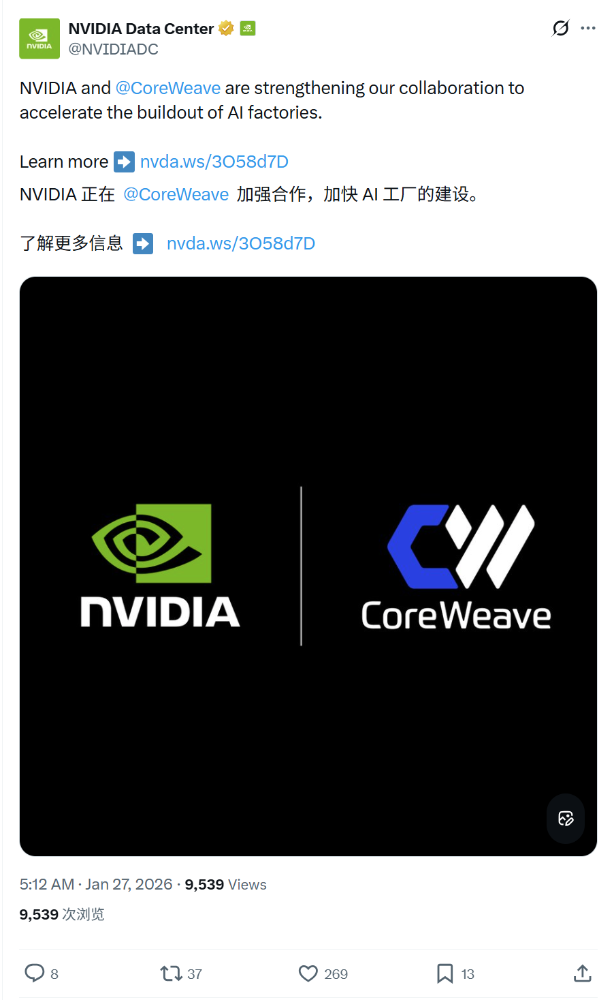
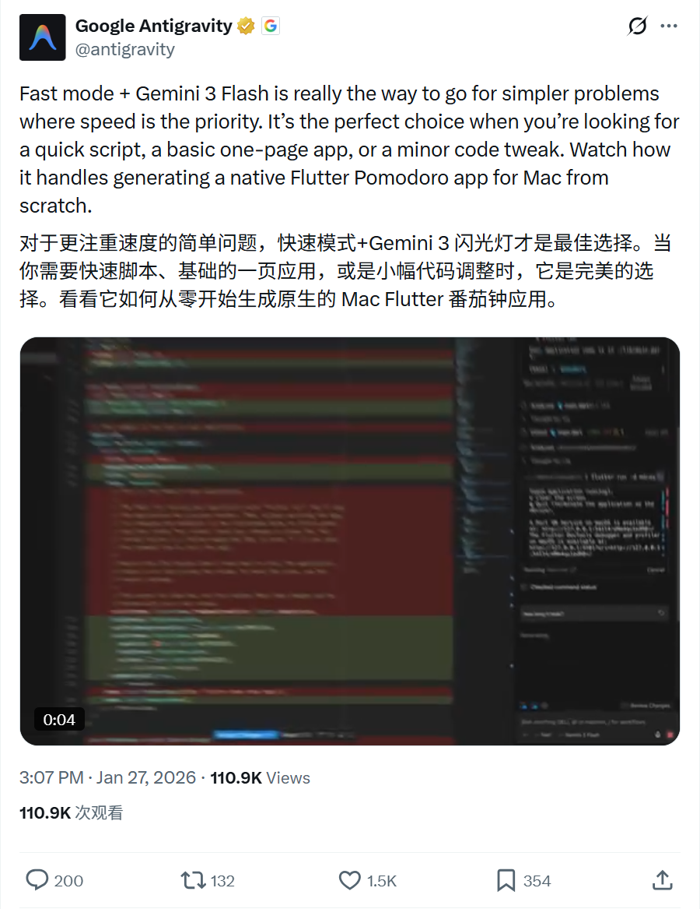
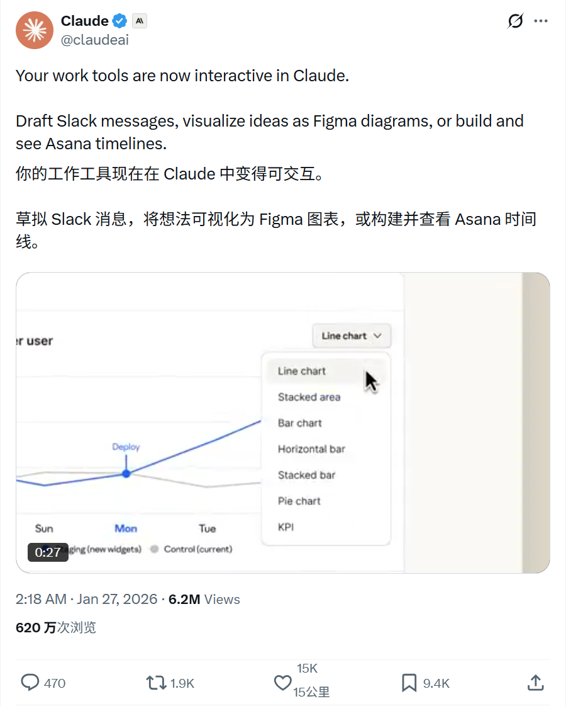
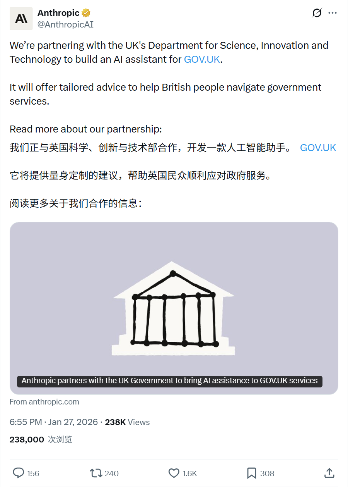
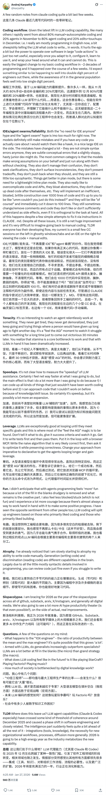

2026/01/27 硅谷AI圈动态
过去24小时，硅谷AI大佬在讨论什么
数据来源：X(twitter)平台实时推文
 小禾说AI (公众号)
清华小禾说AI (视频号)
小禾说AI (公众号)
清华小禾说AI (视频号)
📊 总览
过去24小时，硅谷AI圈活跃度中等，主要热点包括AI应用案例（电影生成、政府助手）、算力投资合作（英伟达）和AI Agent。无重大突破性产品发布。
| 主题 | 关键事件 |
|---|---|
| Google/DeepMind | 发布动画短片《Dear Upstairs Neighbors》，展示Veo/Imagen辅助电影制作能力 |
| NVIDIA | 向CoreWeave投资20亿美元加速建设AI工厂 |
| Google Antigravity | 推荐使用Gemini 3 Flash和Fast Mode处理速度优先的简单任务 |
| Claude | 支持Slack/Figma/Asana等交互式工作工具 |
| Anthropic | 宣布正与英国政府合作构建gov.uk AI助手 |
| AI编程体验 | Karpathy分享Claude等Agent编码体验，80%工作已由Agent完成 |
1
Google DeepMind - AI辅助动画短片首映
🚀 核心内容
- 首映发布： 动画短片《Dear Upstairs Neighbors》在Sundance电影节首映。
- AI工具应用： 团队（包括Pixar校友）使用Veo和Imagen等模型进行辅助创作。
- 高控制生成： 强调AI在故事创作后，将粗糙动画转换为风格化视频的能力，并支持精确编辑而非重新生成。
📸 原帖截图

2
NVIDIA - 20亿美元投资CoreWeave加速AI工厂建设
🚀 核心内容
- 重大投资： NVIDIA向CoreWeave投资20亿美元（每股$87.20），加速AI基础设施建设。
- 宏大目标： 计划到2030年通过合作建设超过5吉瓦（GW）的AI工厂，以满足AI计算需求。
- 技术落地： CoreWeave将率先采用NVIDIA Rubin平台、Vera CPU和BlueField存储系统；并利用Blackwell架构降低推理成本。
- 深度整合： 双方将在软件层面深度互操作，测试CoreWeave的SUNK和Mission Control等云原生软件。
📸 原帖截图

3
Google Antigravity - 官方使用建议
🚀 核心内容
- 快速模式： 推荐用户使用Gemini 3 Flash的Fast mode进行编码。
- 适用场景： 强调其特别适合简单快速的任务，如脚本、单页应用或微调代码。
- 实战演示： 演示了使用 Fast + Gemini 3 Flash 生成一个原生的Mac端Flutter Pomodoro（番茄钟）应用。
📸 原帖截图

4
Claude - 支持交互式工作工具
🚀 核心内容
- 工具集成： Client现已支持交互式工作工具。
- 功能展示： 可直接起草Slack消息、可视化Figma图表、或构建Asana时间线。
📸 原帖截图

5
Anthropic - 与英国政府合作构建AI助手
🚀 核心内容
- 合作事项： 与英国科技部（Department for Science， Innovation and Technology）达成合作，为gov.uk构建AI助手。
- 服务价值： 为英国民众提供个性化的政府服务导航建议。
📸 原帖截图

6
Andrej Karpathy - LLM Agent编码体验深度分享
🚀 核心内容
- 工作流转变： 过去几周内，编码工作流从11月的"80%手动+20%Agent"迅速转变为12月的"80%Agent+20%手动修补"。
- 编程模式： 现在主要是"用英语编程"，告诉LLM写什么简单的代码。虽然有损自尊，但处理"大代码动作"（large code actions）效率极高。
- 局限性： 认为"不再需要IDE"和"Agent Swarm"（智能体群）目前被过度炒作。模型仍会犯错，尤其是微妙的概念念错误，仍需IDE和人工监督（"watch them like a hawk"）。
- 行业展望： 预计这种转变正在两位数百分比的工程师中发生，尽管大众感知仍处于个位数百分比。
📸 原帖截图
